新手指南
新手指南FIELD NOTES / 36
全部文章
从第一次导入订阅，到看懂日志、测速与隐私边界。
🔍 找到 0 篇相关文章
新手指南 小火箭
小火箭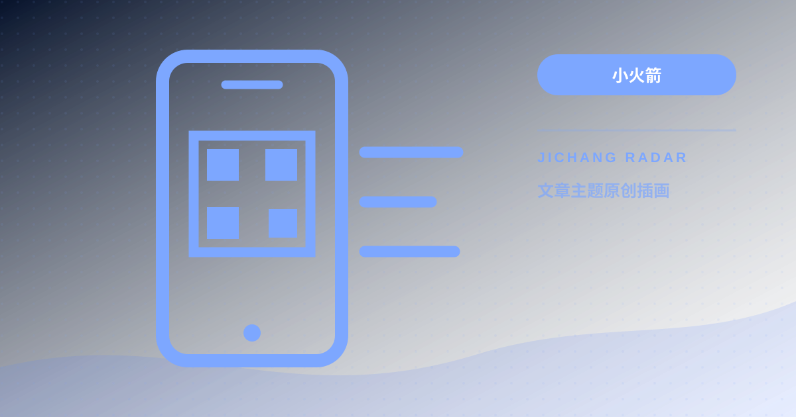
小火箭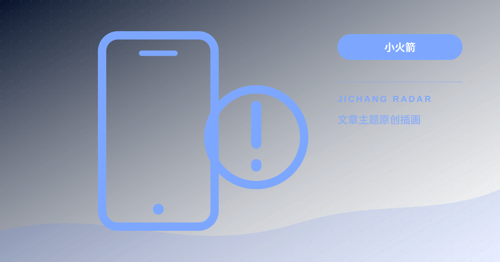
小火箭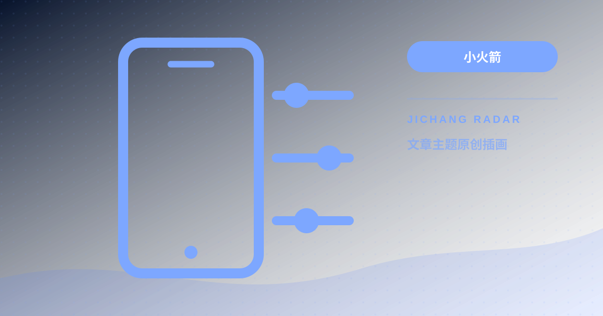
小火箭 客户端
客户端 客户端
客户端 客户端
客户端 客户端
客户端 客户端
客户端 测速方法
测速方法 测速方法
测速方法 测速方法
测速方法 隐私安全
隐私安全 隐私安全
隐私安全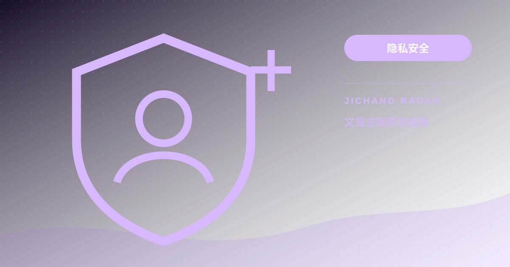
隐私安全 隐私安全
隐私安全 新手指南
新手指南 新手指南
新手指南 新手指南
新手指南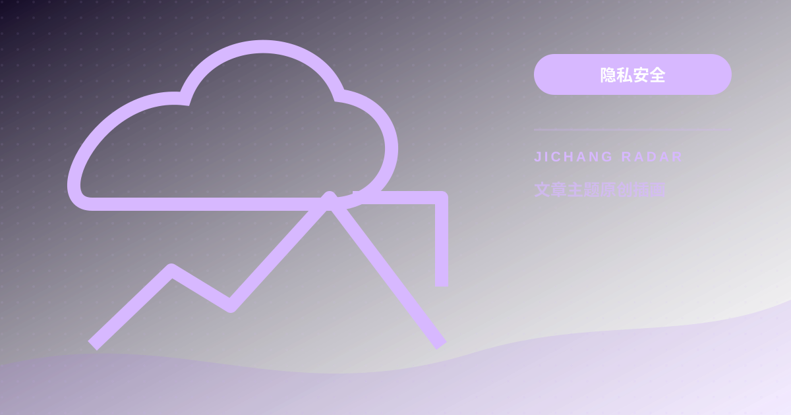
隐私安全 测速方法
测速方法 新手指南
新手指南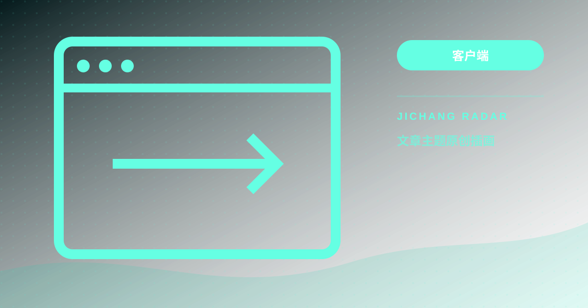
客户端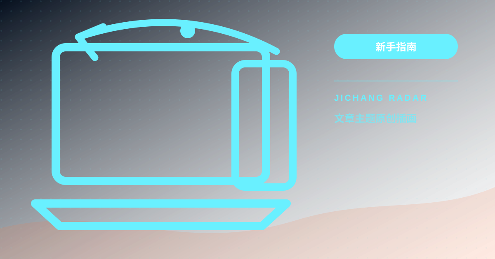
新手指南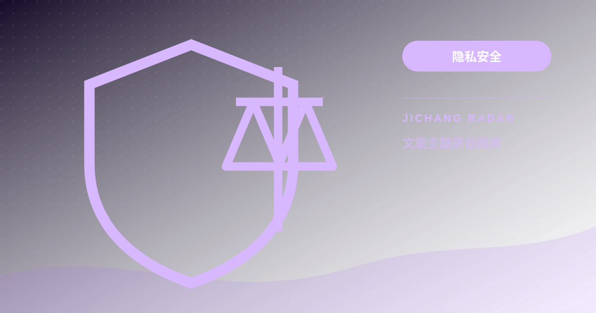
隐私安全 新手指南
新手指南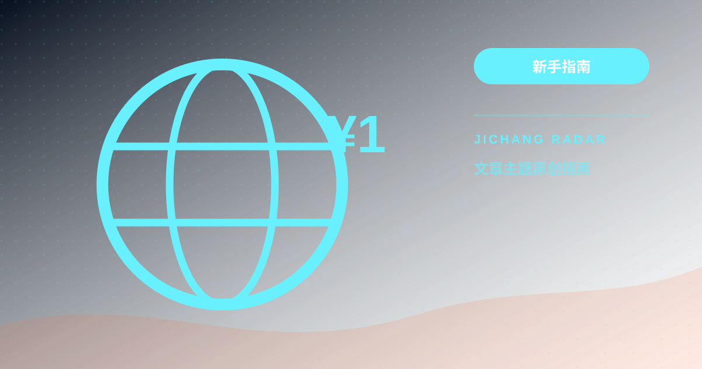
新手指南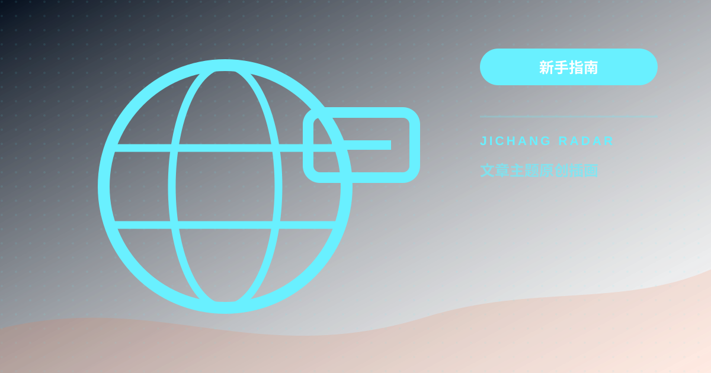
新手指南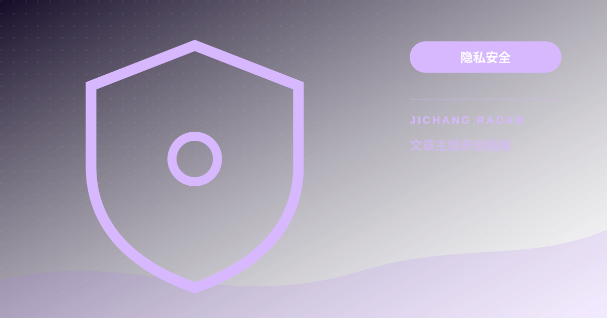
隐私安全 新手指南
新手指南IPLC 专线与 IEPL 中转有什么区别？机场线路原理解析与挑选方法
机场宣发的 IPLC 专线、IEPL 专线、BGP 中转到底有何不同？本文用通俗语言拆解跨境专线原理与高性价比挑选法则。
继续阅读 →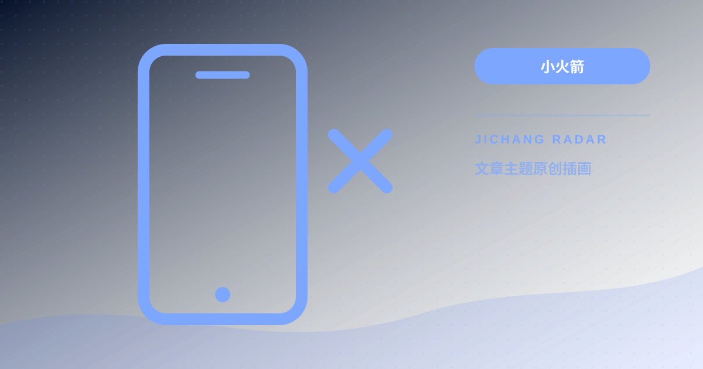
小火箭小火箭节点全部显示超时或 -1ms？常见原因分析与一键修复教程
Shadowrocket 节点列表突然大面积显示“超时”或“-1ms”，无法联网？本文总结 6 种最常见的诱因与对应的快速解决办法。
继续阅读 → 小火箭
小火箭小火箭与 Clash 后台耗电过快、频繁断线怎么办？iOS与Android保活与省电优化
开启代理客户端后手机发热、电池消耗极快或锁屏后自动断线？本文拆解 iOS 与 Android 系统的后台机制与优化配置。
继续阅读 →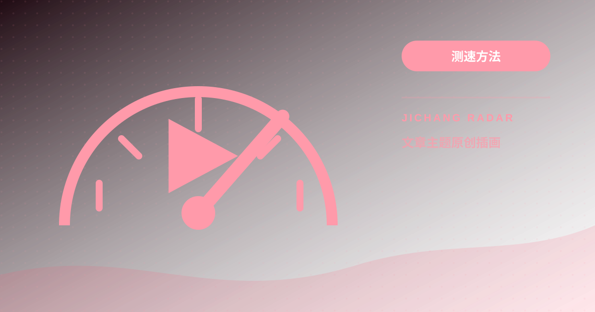
测速方法Netflix、Disney+ 与 ChatGPT 提示 1020/403？原生 IP 解锁检测与避坑
为什么节点能正常上网，打开 Netflix 却只有自制剧，登录 ChatGPT 报 1020/403 错误？本文讲解 IP 风控机制与解锁检测技巧。
继续阅读 →未找到匹配的文章
请尝试搜索其他关键词，例如：“小火箭”、“一元机场”、“Clash”、“中转”